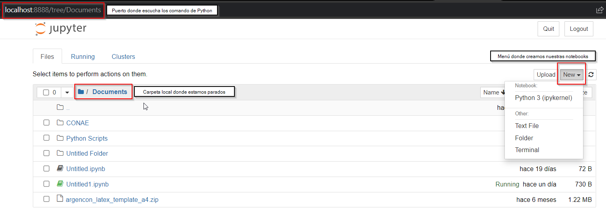

Jupyter Notebook
Contents
Jupyter Notebook#
Jupyter es una de las muchas maneras posibles de interaccionar con Python y sus librerías científicas. Para ello hacen uso de una interfaz basado en un navegador que permiten:
Escribir y ejecutar comandos de Python.
Control para formatear las salidas en el navegador, incluyendo tablas, figuras, animaciones, etc.
La opción de mezclar texto formaterado y expresiones matemáticas.
Aunque Jupyter no es la unica manera de programar en Python (Spyder, Visual Studio Code, PyCharm), es recomendado para empezar a testear nuevas ideas, o para correr pequeños pedazos de códigos, compartir ideas científicas con estudiantes o colegas, haciendo uso del formato de salidad, que nos permite enriquecer nuestro código con explicaciones, gráficos, y otras características que ofrece este entorno.
Inicializando Jupyter Notebook#
Una vez instalado Anaconda, podemos inicializar Jupyter notebook. Para ello, existen dos maneras:
Mediante Anaconda Navigator, donde elegimos el entorno a trabajar y ejecutamos una Jupyter Notebook.
Mediante consola (o Anaconda Prompt en Windows), donde activamos el entorno a trabajar y luego ejecutamos Jupyter Notebook mediante el comando
jupyter notebook
Ejemplo:
conda activate mi_entorno_a_usar
conda install jupyter (Si no lo tenemos instalado en el entorno)
jupyter notebook
La salida del comando nos dice que el notebook está corriendo en http://localhost:8888/, donde localhost se refiere al nombre de la maquina local, y 8888 al puerto donde el kernel de jupyter está escuchando para correr los comando de Python que se ejecuten.
Además el comando nos abre el navegador seteado por defecto a una página que tiene el siguiente aspecto, llamada Jupyter dashboard:
Una vez en el dashboard, nos posiciamos en la carpeta donde queremos guardar nuestra Jupyter Notebook, y hacemos click en New arriba a la derecha, seleccionando Python como opción.

La notebook que abrimos nos muestra una celda activa, donde podemos tipear comando de Python. Como ejemplo tenemos el clásico imprimir Hello world.

Modos de edición#
Las Jupyter notebook usan un sistema de edición que pueden permutar entre dos modos:
Modo de edición, permite la edición en formato Markdown que nos habilita a escribir texto, adjuntar imágenes, videos, escribir en modo matemático, agregar símbolos Unicode.
Modo de comandos, permite la ejecución de comandos de Python por celdas.
Correr una celda#
Cuando una celda se encuentra en el modo de comando, la celda puede ser ejecutado usando Shift-Enter, o apretando el botón Run. En los menús contextuales aparecen diversas opciones para correr nuestras celdas.
Compartir Notebooks#
Los archivos Notebook son simplemente archivos de texto estructurados en JSON, con la extensión .ipynb. Estos archivos puede compartirse como un archivo más, o a través de servicios web como nbviewer.
Por ejemplo, las páginas siguientes de Jupyter Book pueden ser descargadas como un archivo .ipynb y luego abiertas y ejecutadas mediante el uso local de Jupyter Notebook.
Fuentes: